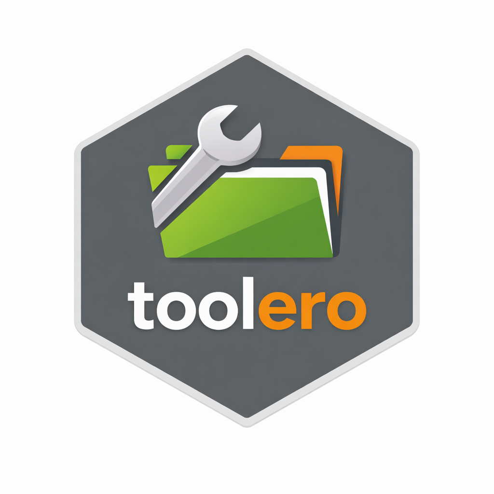

Getting started with toolero
Erwin Lares
Source:vignettes/toolero-intro.Rmd
toolero-intro.RmdWhat is toolero?
toolero is a small, opinionated toolkit designed to make
the first steps of an R project faster and more consistent. It targets
researchers and analysts who want to spend less time on setup and more
time on the work itself.
The package currently provides two functions:
-
init_project()— creates a new R project with a standard folder structure, and optionally initializesrenvandgit -
read_clean_csv()— reads a CSV file and cleans column names in one step
Both functions are designed around a simple idea: the decisions you
make at the start of a project — how it is organized, how data is read
in, how dependencies are tracked — have an outsized effect on how
maintainable and reproducible that project turns out to be.
toolero tries to make the right defaults easy to reach
for.
Installation
You can install toolero from CRAN:
install.packages("toolero")Or install the development version from GitHub:
pak::pak("erwinlares/toolero")Starting a project with init_project()
The problem
Starting a new R project usually means the same manual steps every
time: create a folder, set up an RStudio project, create subdirectories
for data and scripts, initialize renv, initialize
git. None of these steps is hard on its own, but skipping
any of them — especially early on — tends to create friction later. A
project without renv is harder to share. A project without
git is harder to recover. A project without a consistent
folder structure is harder to hand off.
The solution
init_project() handles all of this in a single call:
library(toolero)
init_project("~/Documents/my-project")This creates a new RStudio project at the specified path with the following folder structure already in place:
my-project/
├── data/ # input data
├── data-raw/ # original, unprocessed data
├── R/ # reusable functions
├── scripts/ # analysis scripts
├── plots/ # generated visualizations
├── images/ # static images and assets
├── results/ # processed outputs and tables
└── docs/ # notes, manuscripts, Quarto documentsWhy this structure? The folder layout is opinionated but not arbitrary. Separating
data/fromdata-raw/makes it clear which files are original and which have been processed. KeepingR/distinct fromscripts/encourages moving reusable logic into functions over time, which is a natural step toward more maintainable code.
By default, init_project() also initializes
renv and git in the new project. This means
the project is reproducible and version-controlled from the first
commit.
Why
renvandgitby default?renvensures that the packages your project depends on are recorded and reproducible — someone else (or your future self) can restore the exact same environment.gitprovides a full history of changes, making it possible to recover from mistakes and understand how the project evolved. Both are much easier to set up at the start than to retrofit later.
Adding extra folders
If your project needs folders beyond the defaults, pass them as a
character vector via extra_folders:
init_project(
"~/Documents/my-project",
extra_folders = c("notebooks", "presentations")
)Opting out of renv or git
If you need to skip one or both:
init_project(
"~/Documents/my-project",
use_renv = FALSE,
use_git = FALSE
)When might you skip
renvorgit? Skipping them is occasionally useful in teaching or demonstration contexts where the overhead of a full setup is unnecessary. For any project you plan to share, archive, or return to later, the defaults are strongly recommended.
Reading data with read_clean_csv()
The problem
Reading a CSV file into R is straightforward — until the column names come back with spaces, mixed capitalization, or special characters. Cleaning them up is a small but recurring friction point.
The solution
read_clean_csv() combines readr::read_csv()
and janitor::clean_names() into a single call:
data <- read_clean_csv("data/my-file.csv")Column names are automatically converted to lowercase with
underscores — consistent, predictable, and tidyverse-friendly. A column
called First Name becomes first_name.
Q1 Revenue ($) becomes q1_revenue.
By default, column type messages from readr are
suppressed to keep the output clean. If you want to see them — useful
when reading an unfamiliar dataset for the first time — set
verbose = TRUE:
data <- read_clean_csv("data/my-file.csv", verbose = TRUE)Why suppress messages by default? Column type messages are helpful when you are first exploring a dataset. In a script or document that runs repeatedly, they become noise. The
verboseargument gives you control without requiring you to remember thereadroption name.
What’s next for toolero?
toolero is intentionally small right now. The two
functions it provides solve a specific, recurring problem — getting a
project started correctly. Future versions may include:
- Utilities for common data validation patterns
- Helpers for writing reproducible reports
- Functions that ease the transition from local analysis to running code on remote computing infrastructure
The goal is not to be comprehensive. It is to make the right habits easy to reach for from the first line of code.